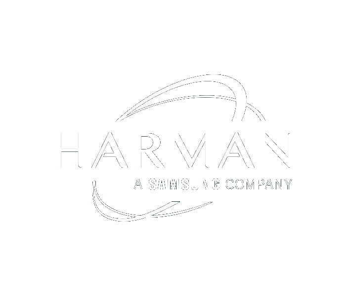
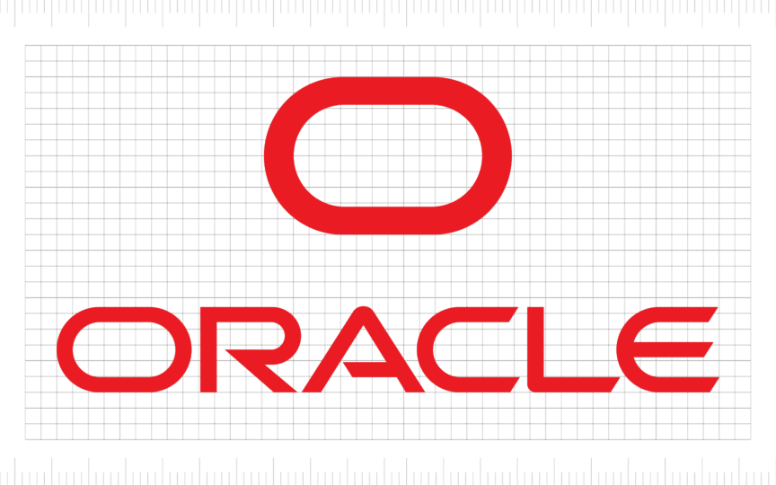
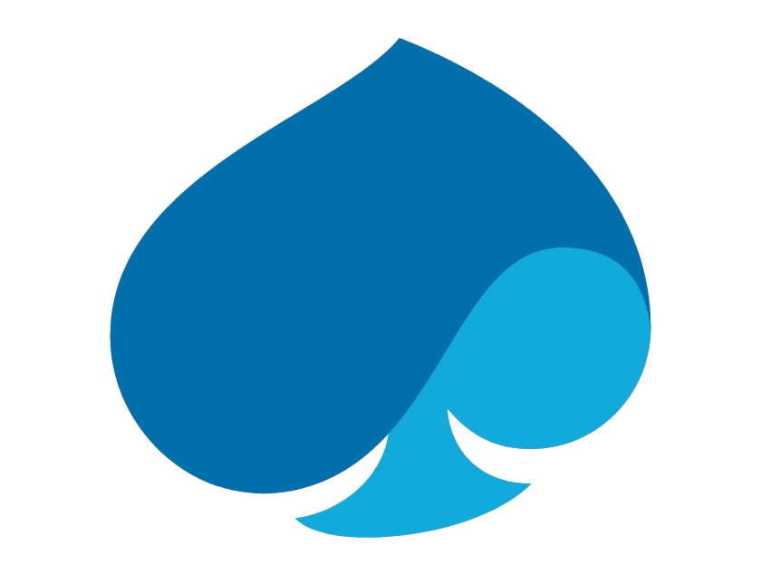
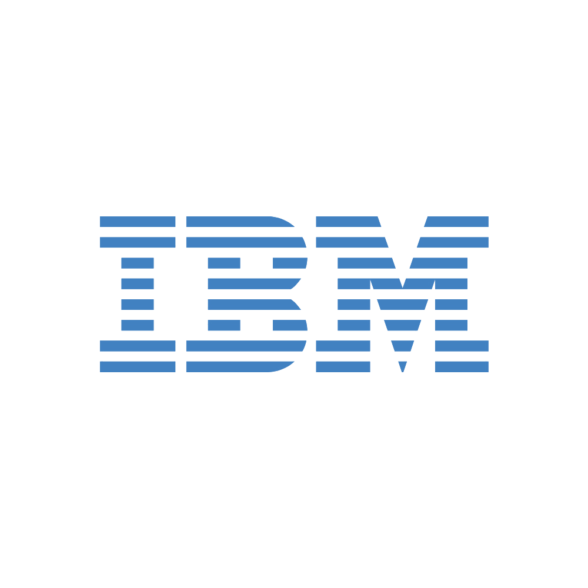

AI Engineer with 8+ years of experience crafting production-grade Generative AI & LLM-powered systems. Specialising in RAG pipelines, multi-agent orchestration, semantic search, and enterprise-ready AI deployments.
I'm an AI Engineer based in Dubai with a deep passion for turning cutting-edge research into real-world, production-grade AI solutions. My journey spans 8+ years — from building Python automation frameworks for automotive giants like Ford, to leading GenAI-powered enterprise applications at HARMAN.
I specialise in designing production-grade Retrieval-Augmented Generation (RAG) pipelines, orchestrating complex multi-agent architectures, and engineering intelligent workflows using LangChain and LangGraph. I seamlessly integrate LLMs with cloud-native infrastructure — bridging the gap between deep software engineering foundations and cutting-edge AI to deliver systems that are scalable, observable, and built to last.
Expert in the Azure AI ecosystem — including Azure OpenAI, Azure AI Search, Cosmos DB, cloud-native GenAI deployment, fine-tuning, and all Azure AI Foundry services.




Multi-Agent Architecture with RAG
Enterprise-grade intelligent customer support assistant for banking operations. Features 6 specialised agents — classifier, retriever, responder, escalation, feedback handler, and validator — orchestrated dynamically.
Natural Language Interface for Data Operations
Internal GenAI assistant enabling engineers to ask natural language questions about pipeline runs, failures, and system status — dramatically reducing manual investigation time.
LangGraph Multi-Agent · Azure AI · RAG Pipeline
Enterprise-grade AI system simulating an airline operations and passenger support copilot, built on Azure AI services and LangGraph multi-agent orchestration. Full-stack deployment with React frontend, FastAPI gateway, Redis memory, and Cosmos DB.
I'm currently open to new opportunities in AI Engineering, GenAI architecture, and cloud-native AI deployments. Whether you have a question, a project idea, or just want to connect — my inbox is always open.